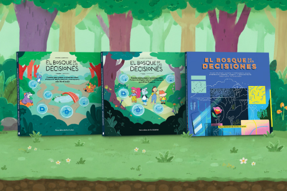

Salas TEC
Experiencias, propuestas y materiales compartidos durante los talleres y workshops. Volvé a recorrer sus contenidos y descubrí nuevas ideas para el aula.
Explorar recursosExplorá los recursos, herramientas y experiencias que formaron parte del encuentro y encontrá nuevas ideas para llevar a tus prácticas educativas.
Experiencias, propuestas y materiales compartidos durante los talleres y workshops. Volvé a recorrer sus contenidos y descubrí nuevas ideas para el aula.
Explorar recursosHerramientas, prompts y materiales para experimentar con inteligencia artificial y descubrir nuevas posibilidades para la enseñanza.
Explorar recursosExplorá esta colección de cuentos y audiocuentos que invita a pensar y conversar sobre Protección Digital Infantil y Adolescente.
Explorar cuentosDescubrí recursos y propuestas para acercarte a la robótica y explorar sus posibilidades en la educación.
Explorar recursosExperiencias, propuestas y materiales compartidos durante los talleres y workshops. Volvé a recorrer sus contenidos y descubrí nuevas ideas para el aula.
Taller que invita a explorar cómo la inteligencia artificial está cambiando la manera de programar. A partir de experiencias reales con estudiantes, se introduce el vibecoding y se comparten herramientas y estrategias prácticas para docentes.
Ver materialUna reflexión en torno a las etapas y criterios prácticos para el diseño de experiencias educativas, tomando como eje el modelo «SAMR» y presentando Google Workspace for Education como un habilitador de comunicación y colaboración en el aula.
Ver materialEste taller propone una pausa para desconectarse del ritmo cotidiano, explorar la creatividad, descubrir nuevas formas de expresión y recuperar el valor del juego como experiencia de encuentro y aprendizaje.
Ver materialUn recorrido por las posibilidades de las narrativas transmedia y la combinación de distintos lenguajes, medios e inteligencia artificial para enriquecer las experiencias de creación de historias, con foco en los estudiantes como creadores.
Ver materialUna propuesta para repensar la enseñanza y la evaluación en tiempos de IA. A partir de situaciones y actividades para primaria y secundaria, se exploran estrategias para diseñar consignas que promuevan el pensamiento crítico, la validación de información y la toma de decisiones, tanto al aprender sobre IA como con ella.
Ver materialUn recorrido práctico por el Aprendizaje Basado en Proyectos (ABP), para conocer sus principios y etapas. A partir del ejemplo de un proyecto concreto, se explora cómo diseñar experiencias que inviten a los estudiantes a investigar, tomar decisiones, crear y trabajar colaborativamente frente a desafíos significativos.
Ver materialUn encuentro de exploración del diseño lúdico como herramienta para crear experiencias de aprendizaje significativas, participativas y motivadoras. Se abordan conceptos y teorías sobre el juego y se ofrecen ejemplos, reflexiones y herramientas prácticas para docentes.
Ver materialEste encuentro propone reflexionar sobre el potencial de los videos como herramientas para transformar las experiencias de enseñanza y aprendizaje en el aula, a partir de la experiencia de YouTube.
Ver materialTaller de exploración de Six Bricks, una metodología pedagógica innovadora que -mediante el uso de seis ladrillos de colores- estimula el desarrollo cognitivo, motor y socioemocional de los estudiantes, a través de dinámicas prácticas y participativas.
Ver materialEspacio de formación e intercambio en torno a la enseñanza de la robótica y la programación desde una perspectiva pedagógica y curricular. A partir de experiencias reales desarrolladas en distintos niveles educativos, se propone explorar cómo el pensamiento computacional, la creatividad, el juego y la resolución de problemas pueden integrarse en proyectos interdisciplinarios con sentido para los estudiantes.
Ver materialA partir de una historia personal, datos y ejemplos cotidianos, este taller invita a mirar de cerca cómo se forman los sesgos de género, por qué importan y qué podemos hacer desde el aula para ampliar los horizontes de nuestras estudiantes.
Ver materialNo encontramos recursos con esa búsqueda.
Herramientas, prompts y materiales para experimentar con inteligencia artificial y descubrir nuevas posibilidades para la enseñanza.
¿Qué te gustaría preparar para tu próxima clase? El stand Asistentes IA de Campus ED invita a explorar cómo podés probar distintas maneras de resolver una tarea docente. Elegí un recorrido: para planificar una actividad, explorar un simulador, trabajar con tus fuentes o producir un video.
Ver materialExplorá esta colección de cuentos y audiocuentos que invita a pensar y conversar sobre Protección Digital Infantil y Adolescente.

Explorar cuentosDescubrí recursos y propuestas para acercarte a la robótica y explorar sus posibilidades en la educación.
Robot BA Aprende es un kit de robótica codiseñado por docentes, estudiantes, facilitadores y asesores pedagógicos digitales, quienes participaron activamente en la definición de sus funcionalidades, diseño y posibilidades de uso pedagógico.
El kit cuenta con distintos niveles de programación progresiva, desde experiencias iniciales basadas en movimiento y secuencias hasta programación por bloques y código, acompañando el crecimiento de los estudiantes a lo largo de los distintos niveles educativos.
Su diseño modular e imprimible en 3D permite fabricar y reparar piezas de manera simple y económica, favoreciendo la sostenibilidad y la autonomía tecnológica de las escuelas.
Descargá los materiales necesarios:
Diseñado para imprimir en PLA con boquilla de 0.4 y altura de capa 0.2, sin soportes.
Ver materialPara revelar o grabar en CNC.
Ver materialPara cargar en el microcontrolador ESP32 que controla el robot.
Ver materialSoftware específico para utilizar el robot en los distintos niveles.
Ver materialPróximamente: guía de armado.